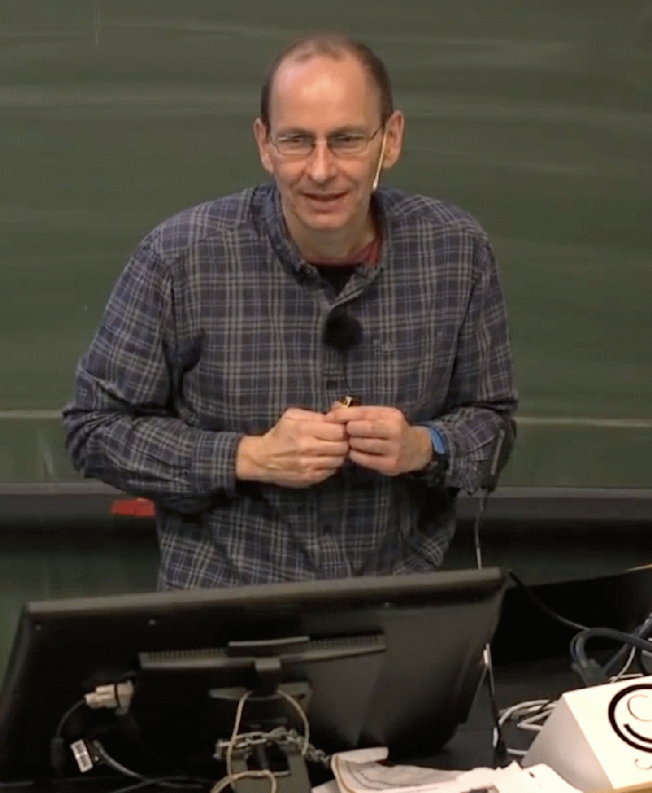
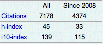

Staff scientist in the Atmospheric Physics of Exoplanets department at MPIA
Research interests: Exoplanets, star and planet formation, high contrast and high angular resolution observations from ground and space
Google scholar profile 
Mail: Max-Planck-Institut für Astronomie
Königstuhl 17
69117 Heidelberg, Germany
Phone: +49 6221 528 289
email: brandner AT mpia DOT de
The Galactic starburst region NGC 3603 observed with HST/WFPC2 (Brandner et al. 2000)